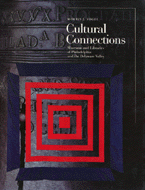

<body bgcolor="#FFFFFF" text="#000000" link="#0000FF" vlink="#CC0000" alink="#CC0000"><center><hr width="350" size="1" align="center" noshade>A guide to the rich cultural institutions of the Philadelphia area<hr width="350" size="1" align="center" noshade><p><a href="https://cdcshoppingcart.uchicago.edu/Cart/ChicagoBook.aspx?ISBN=9780877228400&&PRESS=temple" target="_top">Buy this book!</a> | <a href="https://cdcshoppingcart.uchicago.edu/Cart/Cart.aspx?PRESS=temple" target="_top">View Cart</a> | <a href="https://cdcshoppingcart.uchicago.edu/Cart/Cart.aspx?PRESS=temple" target="_top">Check Out</a></p><p></p></center><!--none//--><h1>Cultural Connections</h1>
<H2>Museums and Libraries of the Delaware Valley</H2>
<h3>Morris J. Vogel</h3>
<P>cloth 0-87722-840-X $45.50, Aug 91, <FONT COLOR=#990033>Available</FONT>
<BR> 256 pp
225&nbsp;color&nbsp;illustrations
</P><h3 align="center"><P><font color="#996633">Award of Distinction from the American Association of Museums,
1992</font></P>
<P><font color="#996633">Philadelphia Book Clinic Certificate of Award,
1992</font></P>
<P><font color="#996633">American Institute of Graphic Arts Certificate of Excellence,
1991</font></P>
<P><font color="#996633">National Gold Ink Gold Award,
1991</font></P>
</H3>
<p>The Philadelphia area is rich in cultural capital; its assemblage of museums, historic sites, and libraries is unsurpassed in this nation. <I>Cultural Connections</I> is a guide to this wealth, exploring the holdings of these numerous institutions and the reasons our society has come to treasure certain works of art and artifice, and particular books, manuscripts, and natural specimens. Addressing broad themes in American history and culture, Morris J. Vogel illuminates the vast collection of objects held by the cultural institutions of the Delaware Valley. With reference to more than two hundred and fifty full-color illustrations, he draws connections between the holdings of one museum and those of others in an effort to reflect on how Americans have thought about culture in making sense of their experience as a people.
<p>The reader of <I>Cultural Connections</I> will catch a glimpse of the spectacular galleries of the Philadelphia Museum of Art and the period rooms of Wintertbur as well as explore the treasures of the lesser-known American Philosophical Society, Wagner Institute, and the Mercer Museum, among others. The impressive array of cultural artifacts that reside in this region will astonish any lifelong resident, history buff, or sophisticated visitor to the Delaware Valley. In addition to commenting on the fabulous displays, Vogel discusses how such institutions evolved, what roles they play in the broader society, and how various groups&#151patrons and professionals, volunteers and visitors&#151interact within (and without) their walls.
<p>The more than eighty art and science museums, libraries, and historical sites, that belong to the Museum Council of Philadelphia and the Delaware Valley are used to reveal the nature and breadth of the cultural enterprise in this country.
<p>Tracing the origins of Philadelphia's cultural and scientific institutions in the formative years of the American republic, examining the effects of the later economic expansion and rise of fortunes in the mid- and late 19th century, exploring the notion of progress and the place it occupies in institutions of formal culture, and considering the importance of reinterpreting the past, <I>Cultural Connections</I> is a journey through the treasures to be found in your own backyard.
<p>With <I>Cultural Connections</I>, Temple University Press initiates a series about Philadelphia's diverse cultural resources. The William Penn Foundation has generously provided the means to make these thought-provoking guides available.
<p>The exquisite design and exacting production standards for this volume have achieved an exciting, almost poster-like display together with a deeply satisfying reading experience. <I>Cultural Connections</I> was designed with a unique structural design concept that totally integrates text, art, and captions within each two-page spread. Relying on neither the art catalog format nor the academic art book format, the designer recognized and balanced the individual and interrelated importance of each element. The printer was chosen from among art book specialists in five different countries for its extraordinary color reproduction.
<BR>&nbsp;<H2>About the Author(s)</H2>
<P><b>Morris J. Vogel</b>, Professor of History at Temple University, has published several other books, including <I><a href="272_reg.html" target="_top">Still Philadelphia</a></I> and <i><a href="570_reg.html" target="_top">Philadelphia Stories</a></i>, both co-authored with Fredric M. Miller and Allen F. Davis (Temple).</P>
<BR><H2>Subject Categories</H2>
<p><A HREF="/tempress/philly.html" TARGET="_top">Philadelphia Region</a>
</p>
<p align="center"><a href="https://cdcshoppingcart.uchicago.edu/Cart/ChicagoBook.aspx?ISBN=9780877228400&&PRESS=temple" target="_top">Buy this book!</a> | <a href="https://cdcshoppingcart.uchicago.edu/Cart/Cart.aspx?PRESS=temple" target="_top">View Cart</a> | <a href="https://cdcshoppingcart.uchicago.edu/Cart/Cart.aspx?PRESS=temple" target="_top">Check Out</a></p><p><font face="Arial" size="1"><a href="copyright.html" onMouseOver="window.status='Web Copyright Policy';return true;" onMouseOut="window.status=''" title="Web Copyright Policy">&copy;</a> 2015 <a href="http://www.temple.edu" target="new" onMouseOver="window.status='Link to Temple University home page';return true;" onMouseOut="window.status=''" title="Link to Temple University home page">Temple University</a>. All Rights Reserved. http://www.temple.edu/tempress/titles/524_reg.html</font></p>